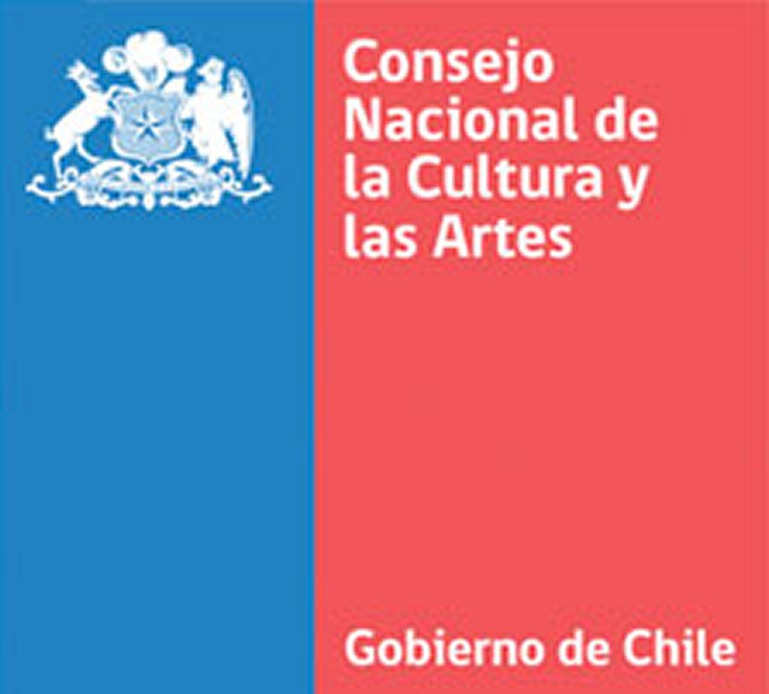
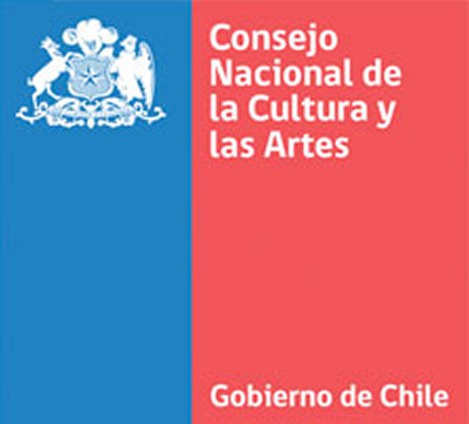

EL SECRETO DEL METODO R.E.N.A.T.A. PARA LA CREACION DE UNA COREOGRAFIA DE DANZAS AFROPERUANAS
Dame solo una clase para mostrarte la fórmula que yo mismo vengo desarrollando desde 1992 con los mejores resultados en mi carrera para elaborar una coreografía de danzas afroperuanas.
El método R.E.N.A.T.A. busca identificar de una forma dinmica, cuales llegaían a ser
los pasos básicos de las danzas afroperuanas; Que vengo desarrollando desde 1992, y basado
en la experiencia de los que fueron mis mentores, y con los cuales aprendí sobre las
danzas, está mi trabajo de investigación y las entrevistas con mis abuelos y abuelas
acerca de mi cultura y sus historias, como también, mi trayectoria de nivel nacional e
internacional, logrando categóricos resultados con este fantástico método.
 
BENEFICIOS DEL METODO R.E.N.A.T.A.
- Los ejercicios realizados en este seminario van relacionados directamente con el
acondicionamiento físico tanto para la parte aeróbica como la anaeróbica.
- Conocerás un método simple pero muy poderoso al momento de crear nuevas
coreografías.
- Entenderás un poco más acerca de un estilo de vida impuesto de
mala manera por el colonizador.
- Tu eres artista y te fascina la creación
pero, el tener un cuadro coreográfico listo para llevarlo a escena significa un descanso
para el profesor y así dedicar ese tiempo de creación para otras actividades.
- Aprenderás como voltear a ver la forma de crear coreografías desde otros ángulos y
perspectivas.
- Con un método dinámico podrás conocer, cuales llegarían a ser
los pasos básicos de las danzas afroperuanas.
 La danza es el lenguaje oculto del alma; (Martha
Graham).
La danza es el lenguaje oculto del alma; (Martha
Graham).
PARA QUIEN:
Este curso está diseñado tanto para escuelas de danza con grupos a partir de
los 12 años (por un tema de discernir el aprendizaje), como también profesores independientes que
quieran montar un cuadro del folklore afroperuano y aprender un poco más acerca de esta hermosa
cultura.
INSCRIBEME AHORA
PRESIO
- Individual: $17 USD
- En grupo (el cobro sera por alumno)
- Empresa (tarifa a convenir)
En resumen esto será lo que obtendrás
- Realizaremos ejercicios de disociación de las partes del cuerpo.
- Conocerás acerca de la historia, precursores y principales difusores del
folklore afroperuano.
- Pasaremos un momento de esparcimiento con un gran
grupo de personas.
- Reforzaremos la unidad en tu agrupación intercambiando
ideas y experiencias con personas que al igual que tu buscan aumentar su conocimiento acerca de
esta maravillosa cultura.
- Tendrás una coreografía diseñada con las bases
exactas para ser interpretada por tu grupo de bailarines.
QUIERO
INSCRIBIRME
Preguntas frecuentes
- ¿Podrias dictar el curso fuera de la ciudad donde vives?
-Es posible negociar con
la persona organizadora del evento sobre los gastos de transporte, alojamiento y comida
para desplazarme a donde se realizará el seminario;
Sumándole a esto, la
negociación de un monto mínimo de participantes al evento.
- ¿Existe alguna manera de tomar el curso a distancia o por streaming?
-Lamentablemente por tratarse de un seminario en el cual implica la convivencia con los
demás compañeros; resultaría imposible por el momento el realizar el seminario de forma
remota
- ¿Cómo podría tener acceso al seminario si no puedo contar con suficientes recursos
económicos?
-Podría existir la manera (en coordinación con el organizador del evento),
de generar un sistema de becas donde pueda postular el beneficiario.
El método R.E.N.A.T.A. busca identificar de una forma dinmica, cuales llegaían a ser los pasos básicos de las danzas afroperuanas; Que vengo desarrollando desde 1992, y basado en la experiencia de los que fueron mis mentores, y con los cuales aprendí sobre las danzas, está mi trabajo de investigación y las entrevistas con mis abuelos y abuelas acerca de mi cultura y sus historias, como también, mi trayectoria de nivel nacional e internacional, logrando categóricos resultados con este fantástico método.

BENEFICIOS DEL METODO R.E.N.A.T.A.
- Los ejercicios realizados en este seminario van relacionados directamente con el acondicionamiento físico tanto para la parte aeróbica como la anaeróbica.
- Conocerás un método simple pero muy poderoso al momento de crear nuevas coreografías.
- Entenderás un poco más acerca de un estilo de vida impuesto de mala manera por el colonizador.
- Tu eres artista y te fascina la creación pero, el tener un cuadro coreográfico listo para llevarlo a escena significa un descanso para el profesor y así dedicar ese tiempo de creación para otras actividades.
- Aprenderás como voltear a ver la forma de crear coreografías desde otros ángulos y perspectivas.
- Con un método dinámico podrás conocer, cuales llegarían a ser los pasos básicos de las danzas afroperuanas.
PARA QUIEN:
Este curso está diseñado tanto para escuelas de danza con grupos a partir de
los 12 años (por un tema de discernir el aprendizaje), como también profesores independientes que
quieran montar un cuadro del folklore afroperuano y aprender un poco más acerca de esta hermosa
cultura.
- Individual: $17 USD
- En grupo (el cobro sera por alumno)
- Empresa (tarifa a convenir)
- Realizaremos ejercicios de disociación de las partes del cuerpo.
- Conocerás acerca de la historia, precursores y principales difusores del folklore afroperuano.
- Pasaremos un momento de esparcimiento con un gran grupo de personas.
- Reforzaremos la unidad en tu agrupación intercambiando ideas y experiencias con personas que al igual que tu buscan aumentar su conocimiento acerca de esta maravillosa cultura.
- Tendrás una coreografía diseñada con las bases exactas para ser interpretada por tu grupo de bailarines.
- ¿Podrias dictar el curso fuera de la ciudad donde vives?
-Es posible negociar con la persona organizadora del evento sobre los gastos de transporte, alojamiento y comida para desplazarme a donde se realizará el seminario;
Sumándole a esto, la negociación de un monto mínimo de participantes al evento. - ¿Existe alguna manera de tomar el curso a distancia o por streaming?
-Lamentablemente por tratarse de un seminario en el cual implica la convivencia con los demás compañeros; resultaría imposible por el momento el realizar el seminario de forma remota - ¿Cómo podría tener acceso al seminario si no puedo contar con suficientes recursos
económicos?
-Podría existir la manera (en coordinación con el organizador del evento), de generar un sistema de becas donde pueda postular el beneficiario.